Los 12 Signos Zodiacales
El zodiaco es una franja del cielo dividida tradicionalmente en doce constelaciones que marcaron las estaciones del año y los relatos mitológicos de diversas culturas. Selecciona un signo para conocer sus fechas, elemento, planeta regente, características y compatibilidad.
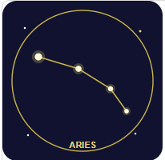
♈ Aries
21 de marzo - 19 de abril
Elemento: Fuego
♉ Tauro
20 de abril - 20 de mayo
Elemento: Tierra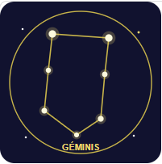
♊ Géminis
21 de mayo - 20 de junio
Elemento: Aire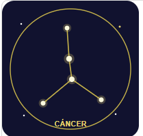
♋ Cáncer
21 de junio - 22 de julio
Elemento: Agua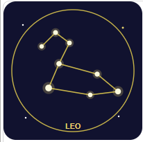
♌ Leo
23 de julio - 22 de agosto
Elemento: Fuego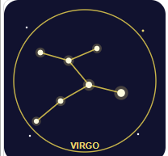
♍ Virgo
23 de agosto - 22 de septiembre
Elemento: Tierra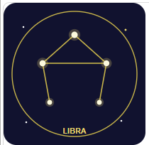
♎ Libra
23 de septiembre - 22 de octubre
Elemento: Aire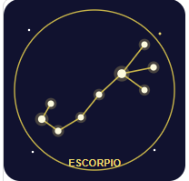
♏ Escorpio
23 de octubre - 21 de noviembre
Elemento: Agua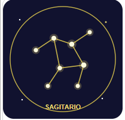
♐ Sagitario
22 de noviembre - 21 de diciembre
Elemento: Fuego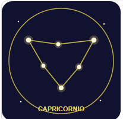
♑ Capricornio
22 de diciembre - 19 de enero
Elemento: Tierra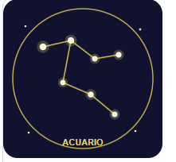
♒ Acuario
20 de enero - 18 de febrero
Elemento: Aire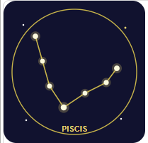
♓ Piscis
19 de febrero - 20 de marzo
Elemento: Agua